Fretboard
The neck is the one thing that never moves. Everything else — the sentence, the timeline, the chip bars, the floating tools — arranges itself around it.
Layout
Six strings, low E at the bottom to high e at the top, and 15 frets plus the open position to start with. Fret numbers run along the neck, with the usual inlay frets — 3, 5, 7, 9, 12, 15, 17, 19, 21 — called out so you can find your place at a glance.
Set the neck to your own guitar with Frets at the left of the marker display bar: anywhere from 12 to 22.
The neck always fills the width it is given and never scrolls sideways, so a longer neck draws narrower frets and slightly smaller markers rather than running off the edge. To work a span of the neck rather than shorten it, use the fret range limiter — that frames a position on the board you have, while Frets changes how much board there is.


Marker display bar
Directly above the neck sits a row of chips that changes how markers read. These are the settings you reach for constantly, so they are always visible rather than buried in the sidebar.
| Group | Chips | What it does |
|---|---|---|
| Frets | − / + | How many frets the neck draws, from 12 to 22 — set it to match your own guitar. The default is 15. This is the one group that is a stepper rather than a row of chips, and it leads the bar because it describes the board rather than the markers standing on it. |
| Labels | Notes / Intervals / None | Notes prints note names (G, A♯). Intervals prints scale degrees (1, 2, ♭3). None leaves bare dots — useful for testing yourself. |
| Shapes | Circles / Intervals | Circles draws every marker the same. Intervals gives each degree its own outline — square, diamond, hexagon — so the root reads differently from a third even in Gray. |
| Colors | Color / Gray | Color gives each interval its own color, so a degree is recognizable before you read it. Gray makes every marker the same, which keeps shapes and geometry in focus. |
| Accidentals | ♯ Sharps / ♭ Flats | Whether black-key notes read as F♯ or G♭. Only meaningful when labels show note names, so this group dims — but stays visible — when Labels is set to Intervals or None. |
Every group except Frets is radio-style: one chip is lit, and tapping the lit chip does nothing. On a narrow window the bar scrolls sideways instead of wrapping.
Three of the four marker groups reach past the neck. Labels, Colors and Accidentals also set how the scale timeline and the Chord Atlas read, so a pitch is named, spelled and colored the same way wherever you meet it. (The Atlas keeps note names when Labels is None — a picker whose options carry no label has nothing to pick by.) Shapes is the neck’s alone: the timeline and the Atlas draw round markers.
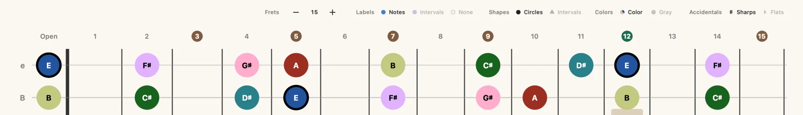
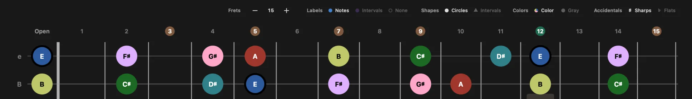
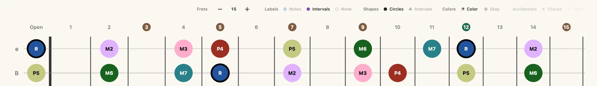
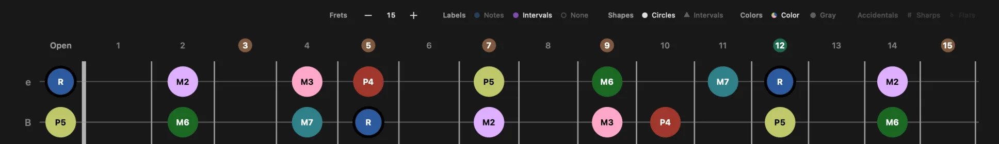
Note markers
Markers show which notes belong to the current scale, chord, or triad. Everything about how they read — their labels, shapes, colors and accidentals — is set on the marker display bar above the neck. The root note is always emphasized against the other tones.
The two shots below show the Shapes group at work.
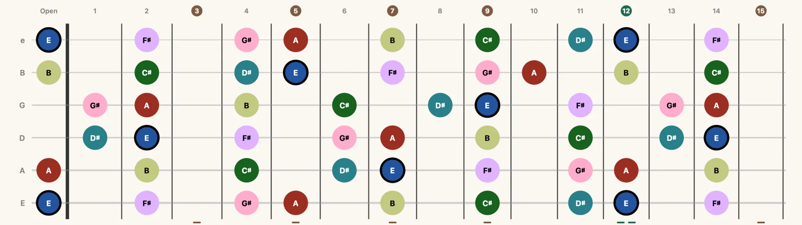
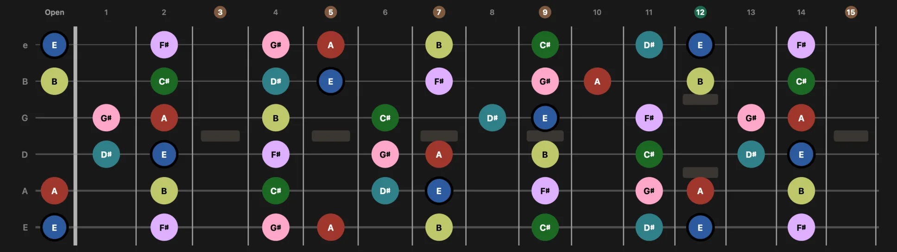
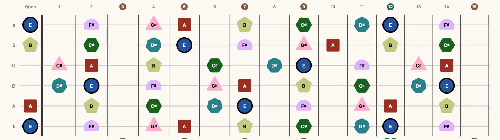
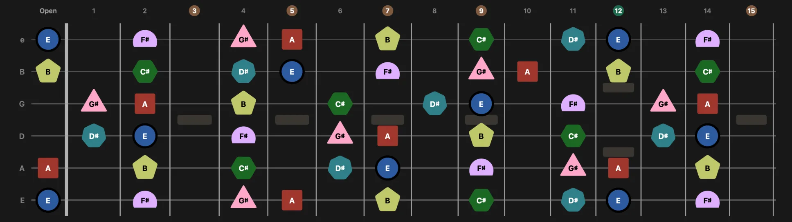
The interval wheel
With Colors set to Color, a marker’s fill is its distance from the key’s root — the same twelve colors everywhere in the app, so a major third looks like a major third whatever key you are in. That root is the one anchor: the neck, the timeline and the Chord Atlas all measure from it, and it stays the key’s root even while a chord is active, so a pitch keeps a single color across all three. Switching the root recolors the whole neck; switching the scale type does not.
- RootUnison
- Minor 2ndOne semitone
- Major 2ndTwo semitones
- Minor 3rdThree semitones
- Major 3rdFour semitones
- Perfect 4thFive semitones
- TritoneSix semitones
- Perfect 5thSeven semitones
- Minor 6thEight semitones
- Major 6thNine semitones
- Minor 7thTen semitones
- Major 7thEleven semitones
Chord tones are never hidden. When a chord is active alongside a key, notes belonging to the chord stay drawn even if they fall outside the scale. Altered chords, borrowed chords, secondary dominants and slash-bass notes therefore show up as they really are, rather than being filtered out by the key.
Scale timeline
Above the neck, the timeline lays out all twelve semitones in a row. Notes that belong to the current scale are filled in; the rest sit faded. When a chord is active, its tones are marked too, so you can read the chord against its key in one line.
The row starts at whatever you are learning, so it never splits in two. In Scales the leftmost key is the key you picked, and the scale climbs from there — set Labels to Intervals and you can read the degrees straight across, R first. In Chords the chord takes the front of the row instead, and the key's scale shifts around it.
Horizontal rails bracket the row to show the structure: the chord's tones are tied together above it, the scale's below. Small Chord and Scale captions name each rail, and triangles mark each root.
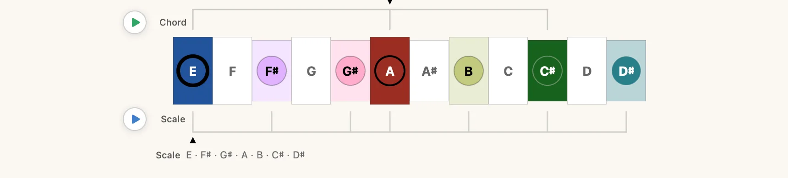
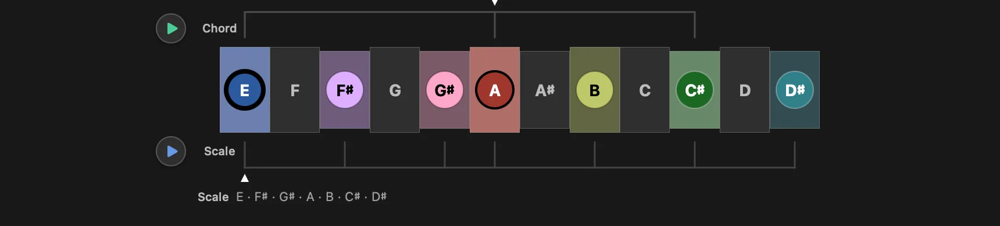
Timeline transports
At the leading edge of the timeline stand up to two round transports, each on the rail it plays — the Chord transport beside the chord rail above the row, the Scale transport beside the scale rail below it. Press one to make sound, press it again to stop; a transport that is sounding fills in solid.
- Scale — plays the scale as a run, following whatever pattern and fret range you have on screen.
- Chord — sustains the chord.
A transport is mounted on a rail, so a rail is all it takes for one to appear: the Scale transport is there whenever a scale is on the timeline, the Chord transport whenever a chord is active. That includes Triads, which can now sound the triad it is showing you.
Under the row, a single tone line spells what the transport is about to sound. It follows the subject of the mode you are in — the chord in Chords and Triads, the scale in Scales — except while something is playing, when it follows the sound instead. When both transports are up it puts Scale or Chord in front, so you can tell which one it is describing.
The scale's line is spelled from the notes that will actually be struck, so narrowing the fret range or switching on a box narrows the line the same way it narrows the run. If the visible range holds no playable notes, the line says No notes in this fret range rather than leaving you to press a dead button.
The spelling follows the rest of the app: Labels decides whether you read note names or interval degrees, and Accidentals whether they are sharp or flat. It answers a different question from the timeline above it — the timeline maps the key, the tone line says what this one transport will sound.
Visual Groupings: overlays and boxes
Directly below the neck, a matching chip bar draws pattern systems over what is already there. Which groups appear depends on the mode you are in.
The row is wider than a narrow window can hold, so it breaks on purpose rather than truncating: the switches you flip mid-practice — Fret Range, and Non-Chord Notes in Chords — stay pinned in place while the pattern systems scroll behind them. Where content really is cut off it passes under a soft fade, so a sliced chip reads as more row rather than damage.
CAGED
Off / All / C / A / G / E / D. Overlays one of the five CAGED shapes — or all of them at once — on the current scale, chord, or triad. Available in every learning mode.
How a shape is drawn is set in Settings → Fretboard → Shape Overlays → CAGED Display:
- Box — the outline of the shape's region.
- Lines — connecting lines through the shape's notes.
- Both — outline and lines together.
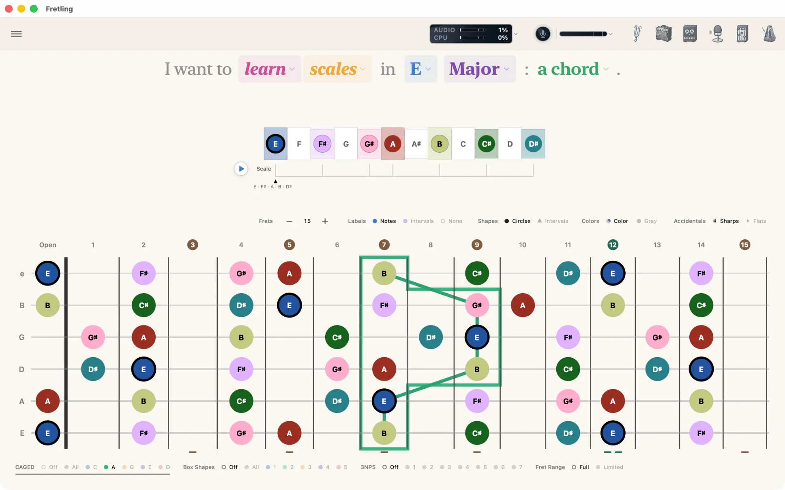
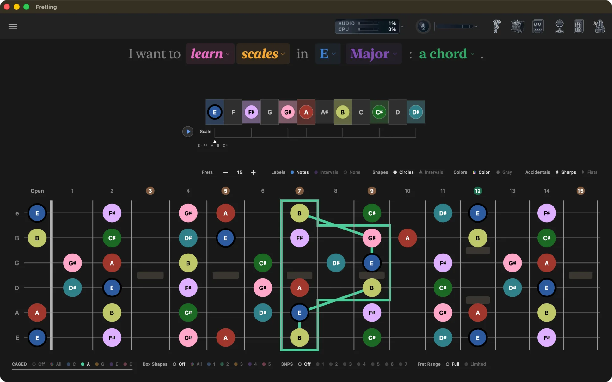
Box Shapes (pentatonic)
Off / All / 1 / 2 / 3 / 4 / 5. Overlays pentatonic position boxes. In Scales and Triads modes you pick a single position or All; in Chords mode the same five positions are drawn in the context of the selected chord.
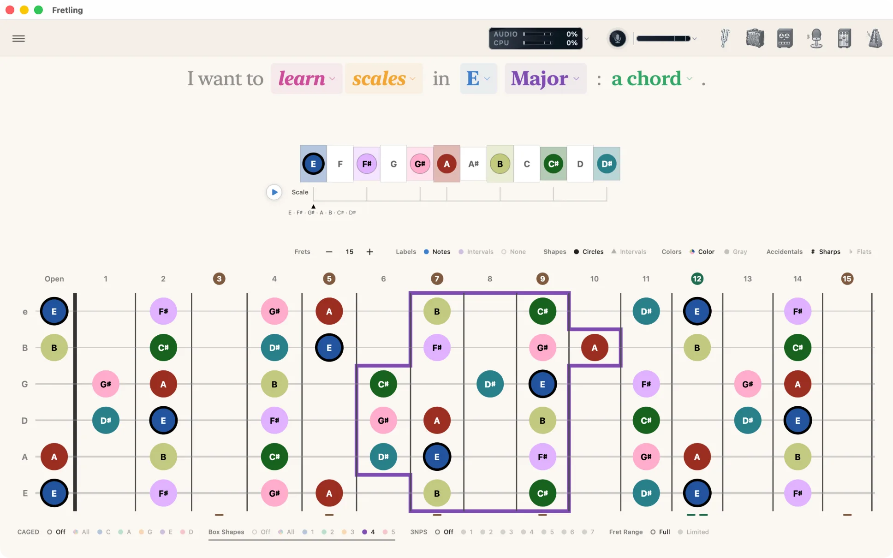
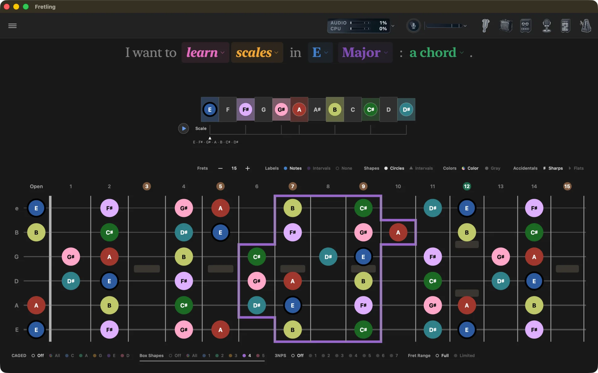
Chord Shapes (Chords and Progressions)
Off / On. Turns the chord-shape overlays on the neck on and off — see Chord shapes below for what they draw and the settings that go with them.
3 Notes Per String
Off / 1 … 7. Scales mode only. Draws a pattern with three scale notes on every string. How many patterns exist depends on the scale — a seven-note scale gives seven, and smaller scales offer fewer.
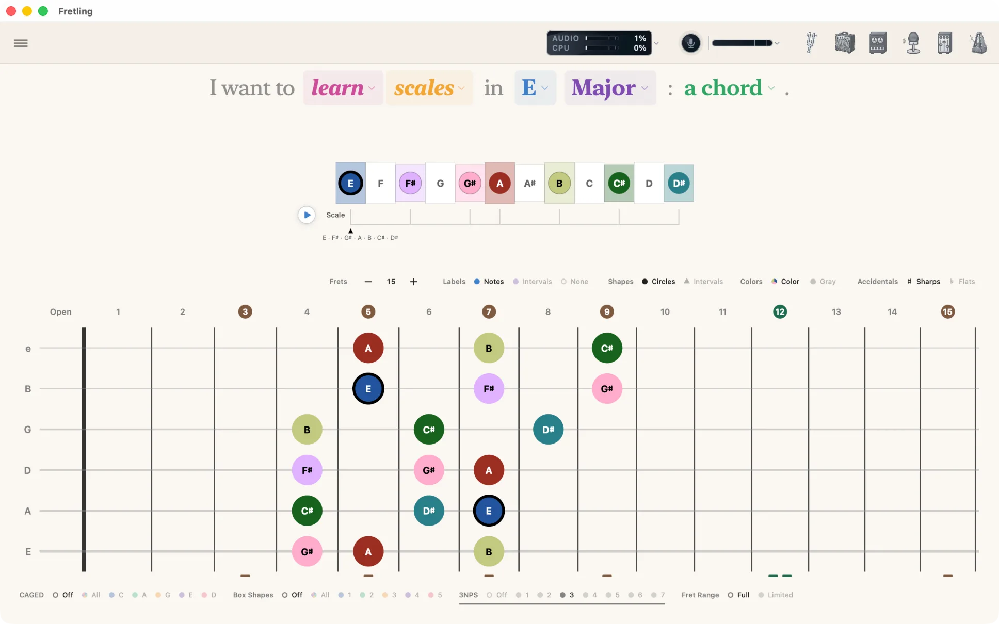
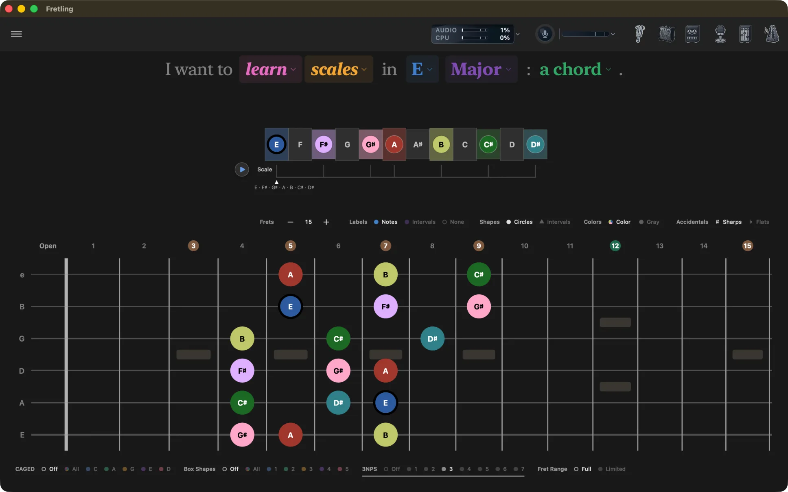
Strings
Off / 123 / 234 / 345 / 456. Triads mode only. Narrows the neck to one set of three adjacent strings so you can work a triad shape without the rest of the neck competing for attention.
Non-Chord Notes
Off / On. Chords mode only. Off shows the chord's tones alone; On keeps the rest of the notes visible underneath in gray, so the chord reads inside its key rather than floating on an empty neck.
Fret Range
Full / Limited. Every mode. Limited frames a position window on the neck so you can work a span of frets; Full gives the whole neck back. While the window is up, the group carries a third chip reading the span — 3–8 — which opens as a menu of named positions.
Triad boxes
Triads mode, switched on with Show Triad Boxes in Settings: outlines each triad position on the neck.
Chord shapes
In Chords mode, the Chord Shapes group in the Visual Groupings bar draws real, playable fingerings for the selected chord on the neck, taken from an open chord-fingering database. Set it to On to show them and Off to hide them. Three settings in Settings → Fretboard → Shape Overlays shape how they behave:
- Show Finger Numbers — prints which finger plays each note.
- Timeline Shape Cues — marks the shape's tones on the scale timeline as well as the neck.
- CAGED Interaction — decides what happens when chord shapes and CAGED overlays are both switched on:
- Coexist — draw both.
- Exclusive — chord shapes win; CAGED hides while shapes are on.
- Replace CAGED — chord shapes stand in for CAGED entirely, and the CAGED chip group disappears from Visual Groupings.
A legend below the neck names the shapes currently drawn. It carries the same Chord Shapes caption as the switch, because it lists the same system: turn the switch off and the legend goes with it.
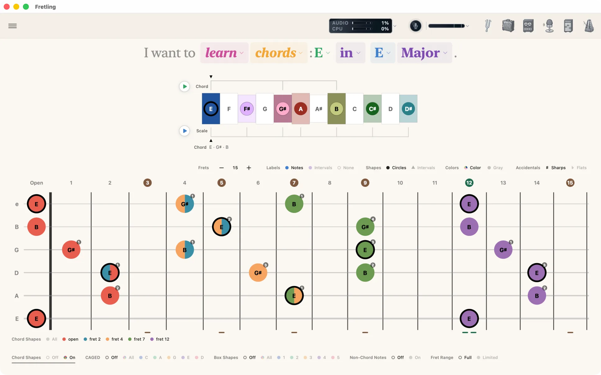
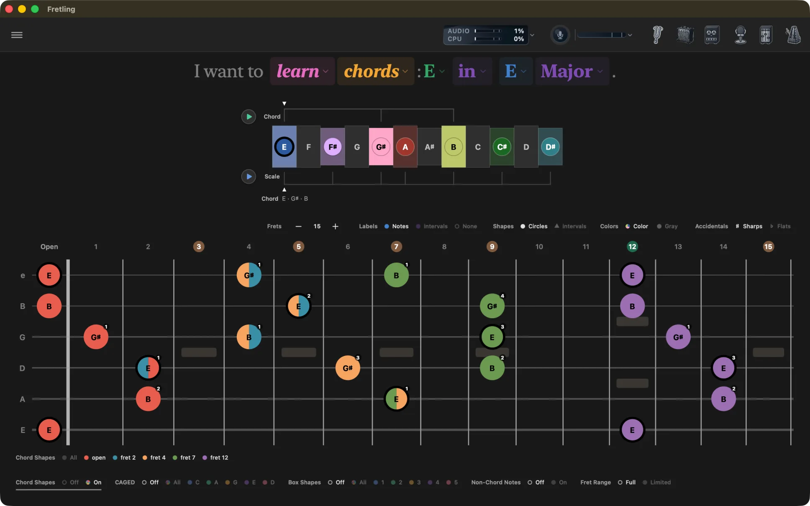
Fret range limiter
Set Fret Range to Limited in the Visual Groupings bar and a position window is drawn on the neck itself — a framed span with a slim grab tab on each edge. The frets outside it are quieted rather than emptied, because set aside and not in the scale must not look alike.
- Drag an edge tab — moves that boundary, snapping to the nearest fret line.
- Drag the fret numbers inside the frame — slides the whole window along the neck without changing its width.
- Double-tap an edge tab — opens the window out to that end of the neck.
The boundary frets name themselves as blue chips in the number row, on the same disc the inlay numbers wear. The frame is never filled in: it claims the span with its edge alone, so the markers it is drawn around stay exactly as legible as they were — and every note inside it stays tappable.
While the window is up, the Fret Range group carries a value chip reading the span — 3–8. It is also a menu: open it to jump straight to a named position — Open, 3rd, 5th, 7th, 9th or 12th. Scale playback follows the window too.
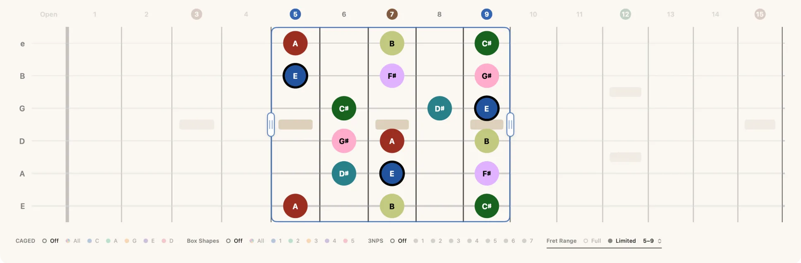
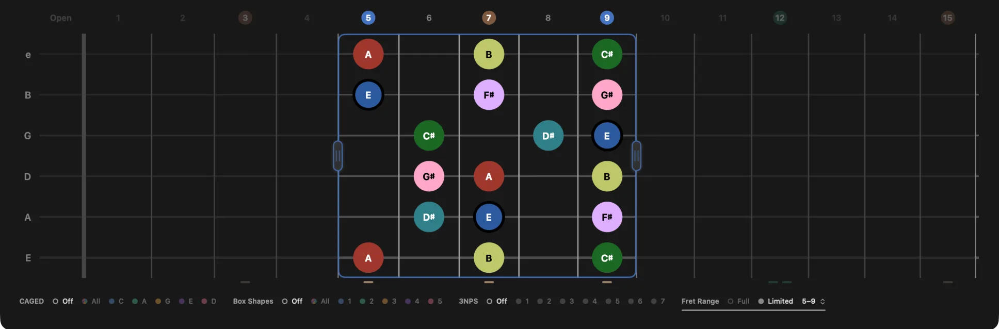
Tap to play
Tap any visible marker to hear that note, using the instrument set in Settings → Audio. On iPad the neck is fully multitouch: hold several notes at once to sound a chord, and slide a finger along the neck to move the sounding note with it. Only visible markers respond, so tapping empty wood stays silent.
Notes light up while they sound — including notes played back by the Scale and Chord chips, and notes recognized by Live Detect, so you can see what you just played.